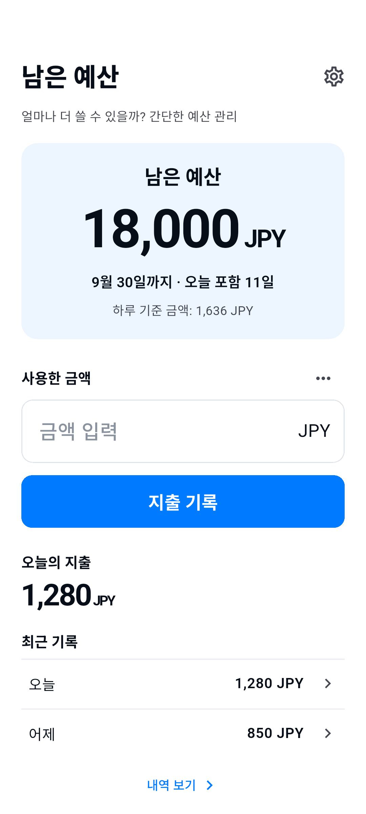

예산 금액, 기간, 통화를 설정하세요.
얼마나 더 쓸 수 있을까? 간단한 예산 관리
사용한 금액을 입력하고 남은 예산을 확인하세요.
남은 금액을 바로 확인하는 간단한 예산 관리.
사용 방법 보기iPhone / Android용 · 스토어 출시 준비 중

사용 방법
사용하고 기록하면 남은 금액이 보입니다.
홈에서 지출을 기록하세요. 메모는 선택입니다.
내역에서 기록을 수정하거나 삭제하고 환불을 추가하세요.
다음 예산은 직접 시작하세요. 이전 예산은 내역에 남습니다.
필요한 기능만
예산 하나를 명확하게.
- 남은 예산
- 남은 금액은 등록한 기록만을 기준으로 한 참고값입니다. 은행 잔액이나 사용 가능 금액을 보장하지 않습니다. 환불은 예산을 복원하며 수입 관리가 아닙니다. 기간은 자동 갱신 또는 이월되지 않습니다.
- 6개 언어 · 8개 통화
- 日本語 / English / 한국어 / 简体中文 / Español / Français
JPY / USD / EUR / KRW / CNY / GBP / CAD / AUD - 광고와 개인정보 보호 선택
- 무료 앱이며 홈 하단에 작은 배너 광고 하나를 표시합니다. 입력 또는 편집 중에는 숨겨집니다. 필요한 경우 설정에서 개인정보 보호 선택을 변경할 수 있습니다. 동의 또는 통신 실패로 지출 기록이 차단되지 않습니다.
기기에 저장되는 기록
계정이 필요 없습니다.
예산 금액, 통화, 기간, 지출, 환불, 메모, 설정은 앱 기능 제공을 위해 기기에 저장합니다. 계정이나 자체 클라우드 동기화는 없습니다. 이 기록을 당사 서버나 광고 SDK로 전송하지 않으며 분석 SDK도 추가하지 않습니다.
데이터는 기기에 저장됩니다. OS 백업이나 기기 이전에 포함될 수 있지만 복원은 보장되지 않습니다. 앱을 삭제하면 데이터가 사라질 수 있습니다. 계정이나 클라우드 복원 서비스는 없습니다.
개인정보 처리방침 →